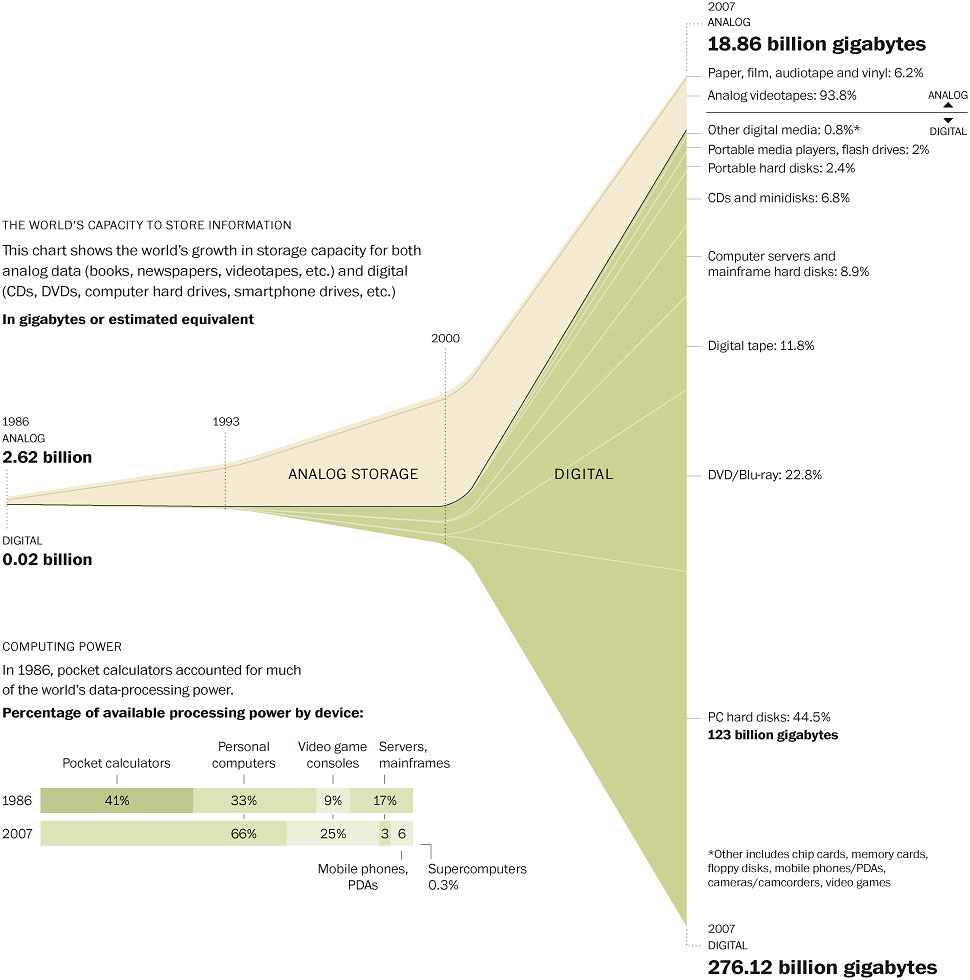
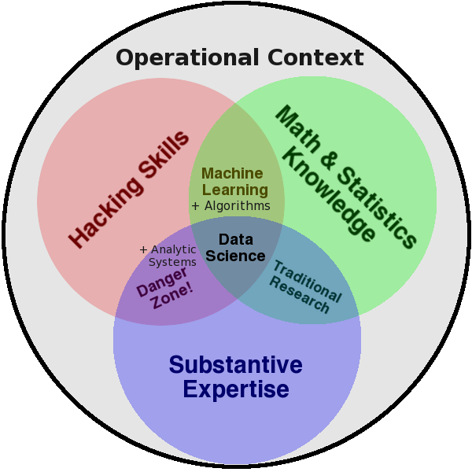
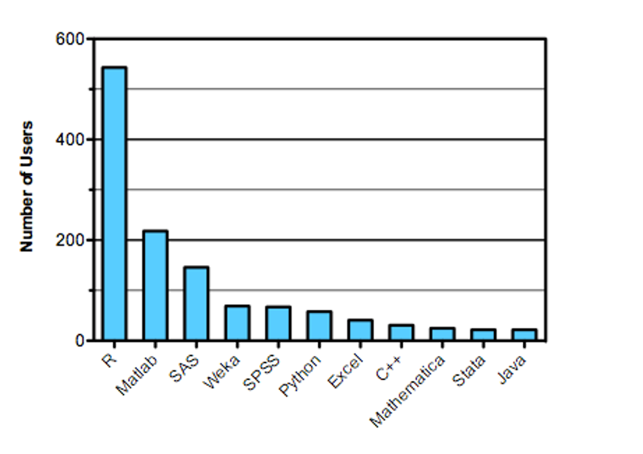
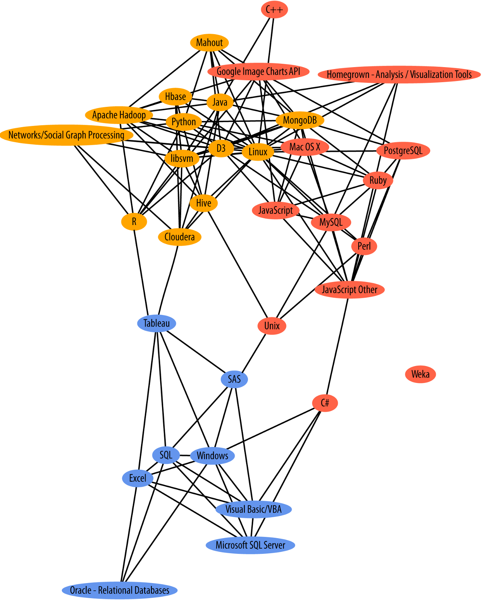
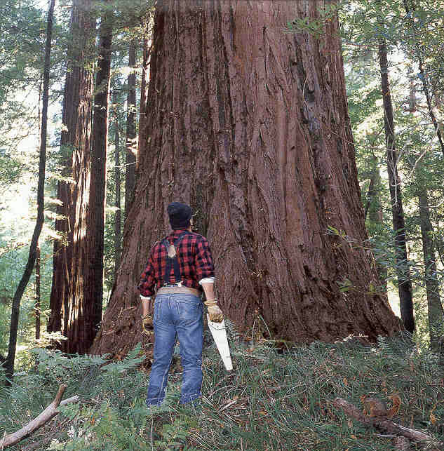

A Data Science Toolkit
Outfitting Production lines for Data Products
Michael A.Smith, Sr. Analyst at ICF International
Clarence Dillon, Graduate Student at GMU's Krasnow Institute
for 2014 MORS Symposium, WG {29, 33}
Introduction and Outline
- Why we care about Data Science
- Themes used throughout this presentation
- Describing the Industrial Data Flow
- Resources for your next steps
Why We Care About Data Science
- Currently trending
- There's so much more data now!
- Confluence of disciplines
- Production of insights and methods
- Reproducibility
New Popularity of Data Science
- A (new) way to integrate perspectives
- A way to leverage computer power
- Speed, Volume, Reliability, Consistency
- Processing power, parallelization
- Applied Science
Reproducibility
- Reproducibility vs Replicability
- Closest we can do with event and social data
- not completely scientific
- better than nothing
- Necessary for engineering the data process
- Toolkit enables production of insights

Growth of Data[1]
Data Science
- Sexiest job of the 21st Century
- New kinds of data and inquiry necessitate a new set of skills
- What distinguishes a data scientist
- Databases contain data; data science generates data products
- Statistics: the grammar of data science
- A team sport

Drew Conway and NIST [2]
Statistics & Math
- Right tool for the job
- Friends don't let friends use Excel for stats [5], [8]
- Pick the ecosystem that's right for you
- *nix Ecosystem:
- R, Python
- Octave
- Windows Ecosystem:
- SAS/JMP, Stata
- Tableau, NodeXL
Strata Data Science Salary Survey 2013 [2]
Hacking
- 'nix environments (OSX, Linux)
- C/C++, R (RCPP), Python, Java, Ruby, Perl, ...
- MySQL, Hadoop, MongoDB, Mahout, ...
- D3, Google Charts, homegrown viz
- Windows
- C#, VB.Net
- SQL, Oracle, Excel
- Tableau, other JavaScript
Subject-Matter Expertise
- What to calculate
- What it means
- How to approach a problem
- Why Soft Skills Matter [6]
- Understand the fundamental problem...
- the analytic problem



Presentation Themes
- Process Steps
- Cross-industry Standard Process for Data Mining (CRISP-DM) [4]
- Data Science as building a production line
- Big Data
- This presentation is NOT//NOT about big data
- but, these tools are necessary for big data

Process
- Acquire
- Clean
- Explore and Visualize
- Model and Analyze
- Products and Publications
Data Acquisition
- Data sources
- Repositories (downloadable)
- APIs (JSON, XML, ...) [9]
- Databases (SQL, JSON, XML, Hbase, ... )
- Big data
- (it'll be the last time we talk about it)
- Provenance
- Keep a copy of the raw data
Sources
- Warehouses & Repos
- Accessibility
- APIs
- Freedom
- Lower the bar for entry
- Invite discussion, validation, improvement
Big Data
- Good data science is prerequisite to big data
- Importance of repeatable processes
- Map-Reduce
- Process a data flow
- Like water treatment or electricity production
- Data science == engineering the plant
Provenance
- What have you got
- Where did it come from
- Where did they get it
Cleaning Data
- Standardization
- Misspellings, Initials
- Levenshtein distance
- Missing values
Standardization
- Dealing with typos and differences
- Who worked on this briefing?
- CW Dillon
- Clarence W Dillon
- C. W. Dillion
- Differences in code lengths [7]
- Java: 24, C++: 63, VB.Net: 20, C#: 39
- Python: 15, PHP: 1, R: 2
- Translating Units of Measure
Explore Data
- Exploratory statistics (summary stats)
- Exploratory visualization
- Volume (size and extent)
- Shape
Shape and Volume
- Format
- Open formats: CSV, TSV, XML, JSON
- Closed formats: .DTA, .SAS, .XLS(X)
- Shape
- Long or wide, sparse or dense
- Tabular, nested
- Size
- How big will it be in program memory?
- Does the JVM need a bigger heap size?
- Can it be loaded bit-by-bit?
Exploratory Viz
- Lattice and pair-wise comparisons
- Interactive graphics
- ggplot2 (ggplot or qplot)
- Networks
- layouts
- trees and hierarchies
Visualization Sequiter

Exploratory Stats
- Summary statistics
- Measures of central tendency
- Compare to impressions from size/shape
- Autoregression
Problems with Summary Stats
Compare the whisker plots with jitters

Models & Analysis
- This is the 'secret sauce' for your data product
- Demonstrate the insight(s) from exploration and analysis
- Narrate the data story
Regression
- Identifying dependent and independent factors
- Lingua Franca of statistical relationships
- Correlation, way to deal with multiple factors
- Reliable quantitative method to contextualize results
- First step in predictive statistics
Product
- Reproducible research
- Sharing code & data
- PDFs of tables are cruel and thwart the cause of science
- PowerPoint is where data goes to die
- If you're product is good, it deserves an API
Reproducible research
- You care because you value your own time/data
- don't you?
- Can you reproduce your own work 6 months later?
- Share the code as well as the raw data
- This is a science of building the assembly line as much as the products
Data Products
- Think of this as the packaging step for manufactured products
- Documentation is like the instruction manual
- Publication of reports
- LaTeX and Sweave for printables
- Markdown and javascript for the web
- Publication of data
- CSV, JSON, text or other open format
- Raw and processed data as well as results
APIs
- What
- Why
- How
- automated API tools
Resources for More Info
- Local University Programs
- GW: Business Analytics
- GMU: Computational Informatics, Data Science
- UMUC: Human-Computer Interaction, Systems Research
- Online
- MOOCS: Coursera, EdX, Open Courseware
- CodeCademy, Code School (O'reilly), Lynda
- Blogs and newsletters: O'reilly, Is(R), ...
- Local
- Data Community DC
- your local Meetup
- General Assembly
Conclusion
- Data Science is not just 'applied statistics'
- Reproducibility (scripted processes)
- Subject-matter Expertise, aka Soft Skills
- Team sport (no unicorns)
- Toolkits make Data Science scalable, extensible
- Value added comes from:
- Insights (not just data munging)
- Designing the process/tools
References
- 1 "Rise of the Digital Information Age, Washington Post"
- 2 "Strata Data Science Salary Survey"
- 3 "Kaggle Blog"
- 4
- 5 "right tool for the job, Univ. Iowa Statistics"
- 6"DataInformed - why soft skills matter "
- 7 "Rosetta Code"
- 8 "JP Morgan fined for use of Excel to model risk"
- 9 "What You Should Demand from APIs"
Contacting Us
- Michael A Smith
- ICF International
- mike.smith@icfi.com
- Clarence Dillon
- GMU & Fast Forward Analytics, LLC
- cdillon2@gmu.edu, cwdillon@fastforwardanalytics.com